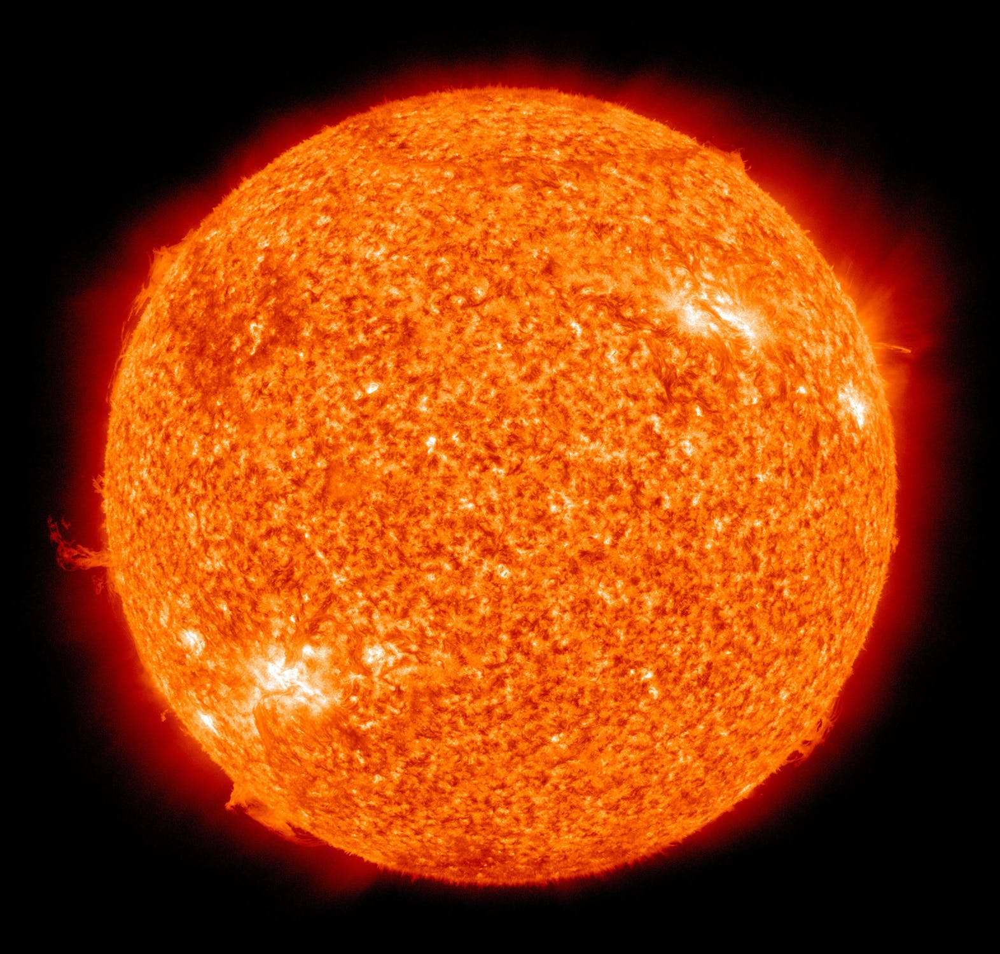
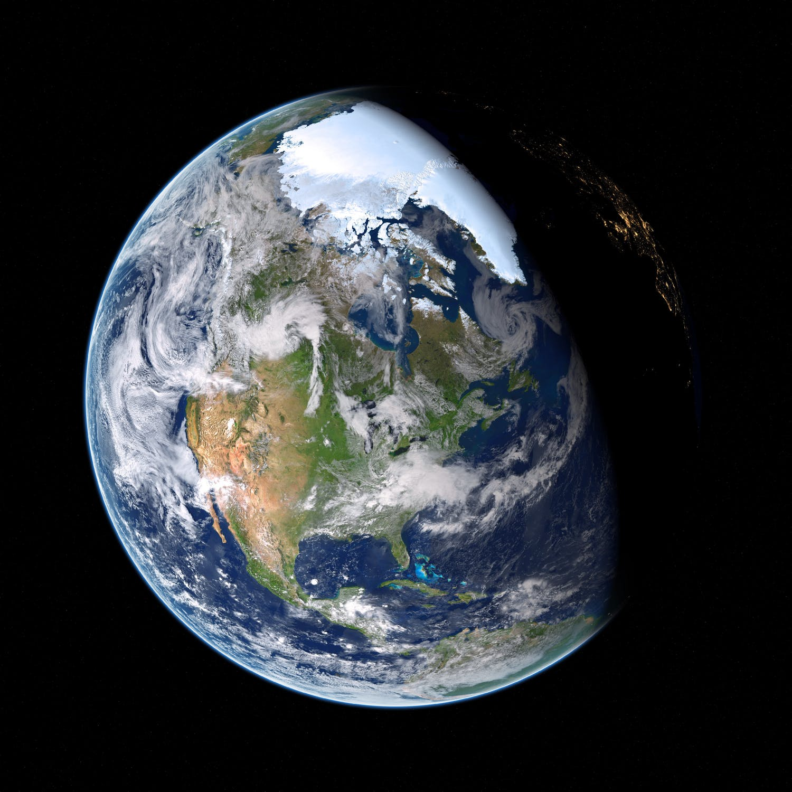
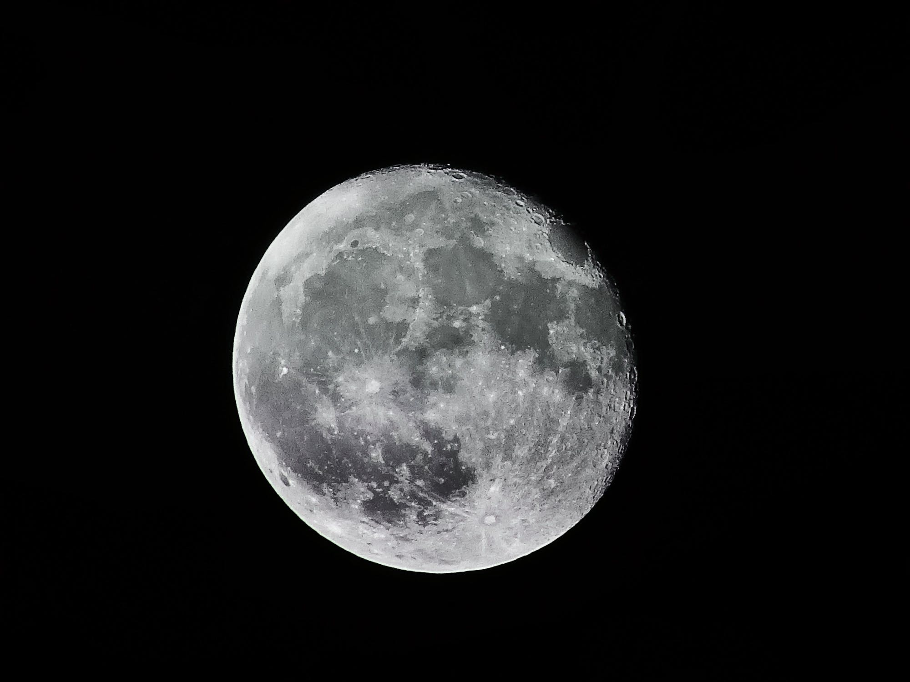

Solsystemet har ikke en tydelig definert størrelse, men kan defineres på forskjellige måter.
En astronomisk enhet (AU) er lengdeenheten som gjerne brukes når man snakker om ting i størrelsesorden med solsystemet.
1 AU er den gjennomsnittlige avstanden mellom Sola og Jorden, og tilsvarer 149 597 892 km.

Dersom man tar utgangspunkt i Solens heliosfære, en boble skapt av solvinden som Solen kaster ut, strekker denne seg til en avstand på 80–100 AU.
Dersom man tar utgangspunkt i Solens gravitasjonsfelt, som strekker seg mye lenger ut enn dette, finner man Oorts sky ved grensen av Solens gravitasjonsfelt.

Oorts sky befinner seg i en avstand på 30 000–100 000 AU.
De to Voyager-sondene har passert heliosfæren og sies å ha bevegd seg inn i det interstellare rom – rommet mellom stjernene. Det vil ta tusenvis av år før de passerer Oorts sky.
